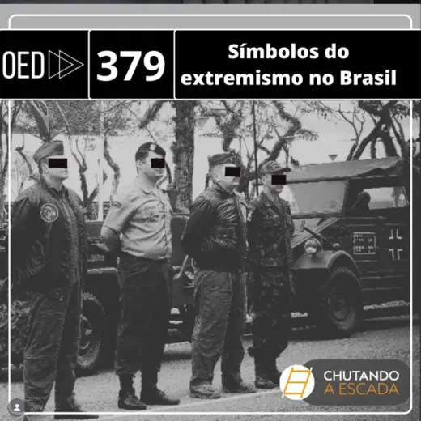
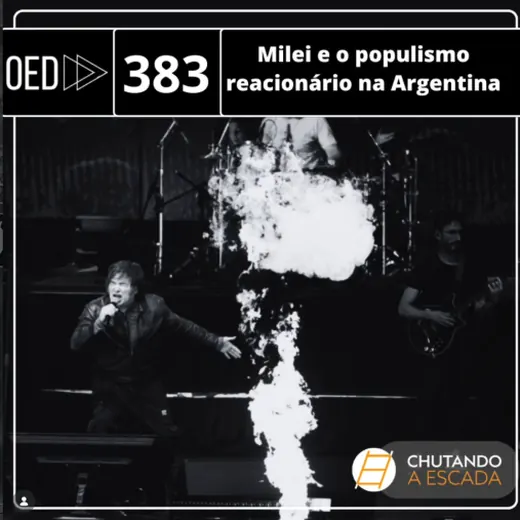
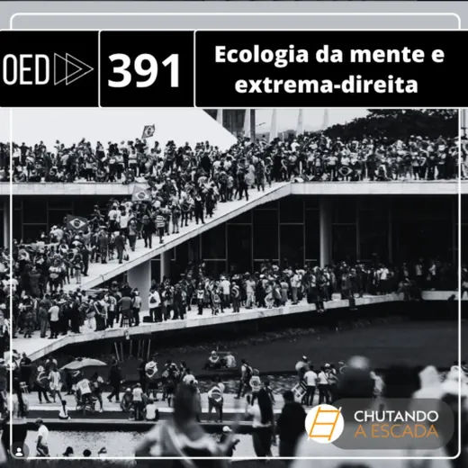
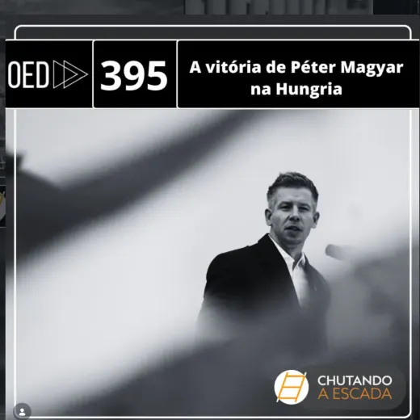
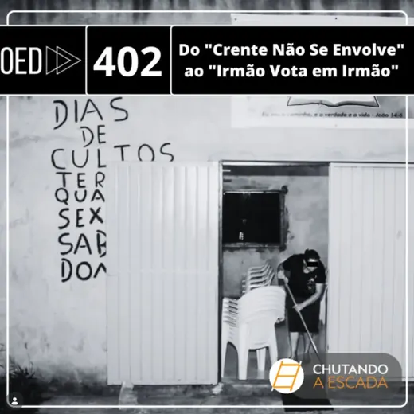
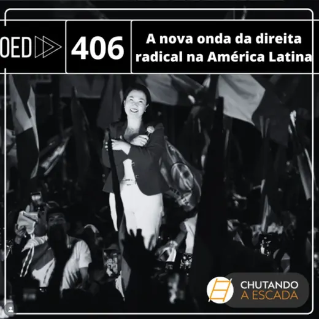
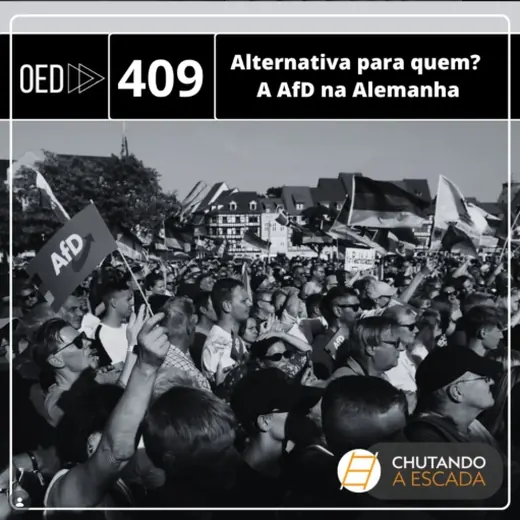

NETEX · Podcast
Podcast
Uma série de episódios sobre extrema direita, produzida na parceria entre o Chutando a Escada e o Observatório da Extrema Direita.
O Chutando a Escada é um podcast brasileiro de economia política internacional e relações internacionais, com público formado sobretudo por estudantes e pesquisadores da área. A parceria com o Observatório da Extrema Direita levou ao programa uma série de episódios dedicados à direita radical contemporânea, em que pesquisadores da rede discutem casos nacionais, conceitos em disputa e as conexões entre eles.
A escolha do formato tem uma razão prática. Boa parte do que se produz sobre o tema circula em inglês, atrás de assinatura de periódico e em linguagem técnica. O podcast é o caminho mais curto entre a pesquisa e quem precisa dela — professores da educação básica, jornalistas, estudantes de graduação, gestores públicos. Os episódios abaixo estão abertos no Spotify.
Episódios
Do mais antigo ao mais recente. Clique para ouvir no Spotify.

Episódio 379 Símbolos do extremismo no Brasil
Episódio 383 Milei e o populismo reacionário na Argentina Episódio 387 Da extrema direita sionista ao bolsonarismo
Episódio 391 Ecologia da mente e extrema-direita
Episódio 395 A vitória de Péter Magyar na Hungria Episódio 398 Bolsonarismo sem Bolsonaro nas eleições de 2026
Episódio 402 Do "Crente Não Se Envolve" ao "Irmão Vota em Irmão"
Episódio 406 A nova onda da direita radical na América Latina
Episódio 409 Alternativa para quem? A AfD na AlemanhaAs capas são de autoria do Chutando a Escada e do Observatório da Extrema Direita, reproduzidas aqui com indicação de origem.